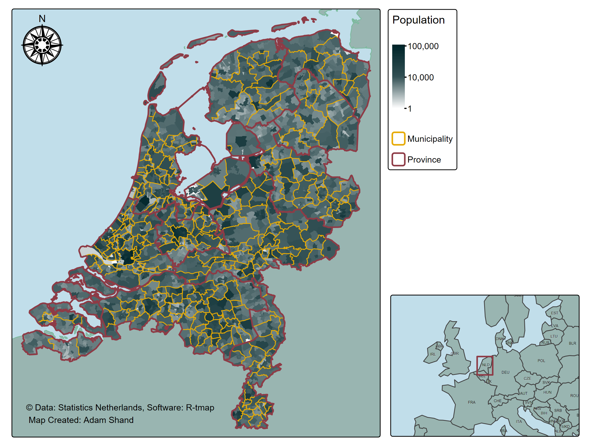
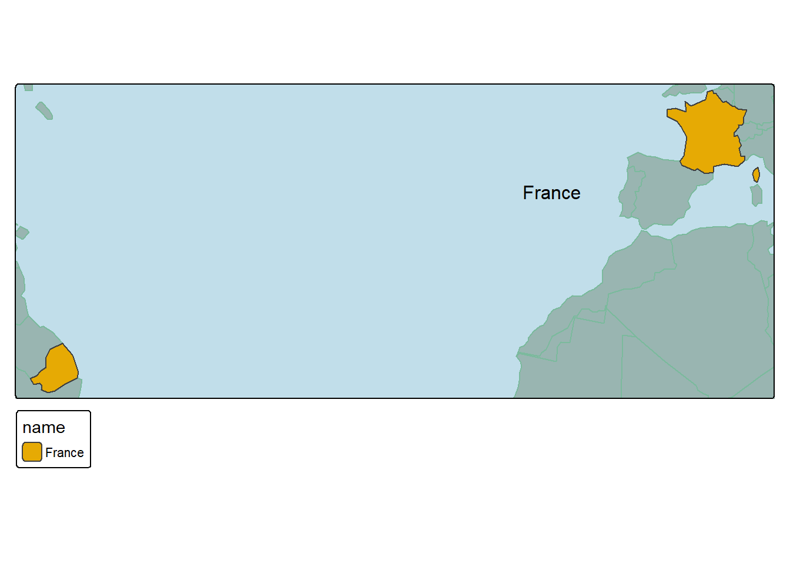

Creating maps using a programming language can be a painful process. In this blog I explore the R package ‘tmap’ and how it can be used to programmatically make beautiful, report ready maps, with as little stress as possible.
1 Introduction
The art of the map is an ancient skill, since the age of movement has the requirement of orientation been required. Just ask the first lobe-finned fishes from over 365 million years ago. Without maps, how would they have known to walk out of the ocean!
Seriously though the human race has been making maps since forever, and there is just something so en-capturing about it. The ability to create a useful and visually map is incredible fun, however knowing where to start can be daunting. There are just so many options, most of which are incredibly complicated, expensive, or time consuming. Just to name a few you have ArcGIS, QGIS, Google Maps, Mapbox, Inkscape, and R. Where to start? What to choose?
Today I’d like to share how I create my maps using R. We will cover a range of things including:
Why I use R over other programs,
What are the requirements of creating maps in R,
What other programs I use to help me along the way,
The type of code you can expect to write for maps.
And at the end of all this, I will walk through the exact code used to produce this map:

Netherlands Population Map
Lets get right into it.
2 Why R?
R… it might not be immediately obviously why I use R to create my maps, and I don’t blame you for thinking that. Its a programming language, it doesn’t have a visual editor, its created for statistical analysis! So why?…
There a few reason that sell it for me:
I already use R, and if I do say so myself I’m quite proficient. But more importantly, it means I can transition from statistical analysis to spatial analysis seamlessly. No need to export the data and load it somewhere else.
R is programmatic. A lot of the time I find that I need to create multiple maps with almost the same styling. R makes this easy due to its programmatic nature.
Control. Once you understand mapping in R, the control you have over the design is immense. Almost anything can be adjusted.
Range. R has a surprisingly wide range of mapping capabilities. Did you know you can: 4.1 Create interactive maps 4.2 Create 3D maps 4.3 Map every type of spatial object (netcdf, raster, vector, dem, etc.) 4.4 Embed maps in shiny applications
And I’ll tell you a little secret. I still use ArcGIS and QGIS, but mostly as support tools.
2.1 Requirements to Map in R
To map in R you only need a couple of things. You need your spatial data (duh), you need to decide on the R package you want to use for mapping (a bit harder), and you need patience (difficulty level: 100).
Picking the right R package might seem hard, there are a lot of options including ggplot2, leaflet, mapview, tmap, and ggmap, however, I’ll make it easy. Pick tmap. The syntax makes sense, it has almost 100% coverage of things you would want to do, and it recently got a great update. Sorted.
2.2 Other Helpful Programs
As I noted above, I don’t restrict myself to just R for maps, I also use ArcGIS and QGIS, because there are some things that R is just never going to be able to do well. For example, StoryMaps by ESRI (ArcGIS) - which are online interactive experiences that include excellent mapping tools. StoryMaps are great for education and outreach, and to take the reader on a journey. StoryMaps are not good for creating maps for you scientific reports. Additionally, I use QGIS for quick visualizations, you can simply drag and drop your data and instantly see what it looks like - no code necessary.
3 Code To Make Maps In R
With that monologue out of the way lets start exploring the code you can expect to encounter when creating your maps in R. For the purposes of this blog, my objective is to create a visually interesting map that demonstrates several of the key skills needed for great maps. We will look at selecting colour palettes and styling, manipulating spatial data to create complimentary layers, adding extra components like a legend, and north arrow, fixing common problems encountered while mapping, and finally - adding inset maps to provide a global/country scale reference.
Note
Please note that the exact content of the map is secondary. The data used comes with the tmap package and is generally just used for practice and experimentation.
3.1 Find the Datasets
The first thing you always want to do when making maps is to gather up all of the data you want to use. You might scoff at how obvious this seems, but you would be surprised how often you get halfway through designing the style of your core layer and you realise, wait… I don’t have a layer for the background. For the map we are going to make today, we have several datasets:
The core layer: “Netherlands Province”
The supporting layers;
“Netherlands Municipality”
“Netherlands District”
The background layers;
“World”
“Europe”
A lot more than you might think for one map, don’t stress, not all maps have this many layers… some have more! Thankfully, most of our data comes wrapped up within the tmap package already, so we don’t have to do any work to find those. However, we will have to find our own source for the “Europe” background layer. There are plenty of options online, but if I’m honest I can’t even remember which one I used. Anyway, lets bring all these datasets into a global environment.
Note
Fun side note, a lot of R packages are loaded in with their own testing datasets you can muck around with, such as tmap with its Netherlands dataset. Even base R has its own datasets you can access right away!
Code
#get a visual on the district dataset (it is pre-loaded in tmap, but we can't see it in our global environment yet)nld_district <- NLD_dist#get the CRS of our main dataset, and use this to convert all others as neededproj_crs <-st_crs(nld_district)#get a visual on the municipality datasetnld_municipality <- NLD_muni |>st_transform(proj_crs)#get a visual on the province datasetnld_province <- NLD_prov |>st_transform(proj_crs)#load in the Europe background dataeurope_background <-read_sf("Europe_coastline_poly.shp") |>st_transform(proj_crs)#get a visual on the world datasetworld_background <- World |>st_transform(proj_crs)
At this point it is usually a great idea to map each layer individually to start to get an idea of what you are working with.
3.2 Edit the Datasets
The day that I don’t have to conduct edits on my data before mapping is the same day that I win the lottery. Editing the data is another step that is often overlooked in the process of making maps, usually because in demonstrations the edits and changes have been made before hand. That will not be the case here, I will be working step by step through each of the changes I made to the raw data to ensure that I got the best visualisation possible.
First up is the Europe background layer. The first issue I have with this dataset is to do with its resolution compared to the Netherlands dataset. For example, here is each layer:
We are going to assume that the border for the Netherlands dataset is indeed more accurate and precise than the Europe dataset (given the scale). Therefore, looking at these two layers we can see that there should be a gap in the Europe dataset in the upper middle portion of the Netherlands that corresponds to a shallow bay. However the Europe dataset seems to be too low resolution to pick this up, so we will have to do it ourselves. This is achieved fairly easily:
Convert the Netherlands dataset into one big polygon (remove any interior detailing)
Use this to cut a hole out of the Europe dataset.
The Europe dataset will no longer appear in the shallow bay.
Code
#create a single polygon of the district datasetnld_dist_tmp <-st_union(nld_district)#remove any holes within the polygon then make the shape validnld_dist_tmp <-st_remove_holes(nld_dist_tmp) |>st_make_valid()#take the Europe background and cut a hole out of it using the dataset aboveeurope_sans_nld <-st_difference(europe_background, nld_dist_tmp)
Code
#the first map is before any changesmap1 <-tm_shape(europe_background) +tm_polygons(fill ="#00252A",col ="#00252A") +tm_shape(nld_district, is.main = T) +tm_polygons(fill ="#e6aa04", col ="#e6aa04")#The netherlands dataset as a single polygonmap2 <-tm_shape(nld_dist_tmp) +tm_polygons(fill ="#e6aa04", col ="#e6aa04")#after cutting out a section of the datamap3 <-tm_shape(europe_sans_nld) +tm_polygons(fill ="#00252A",col ="#00252A") +tm_shape(nld_dist_tmp, is.main = T) +tm_polygons(fill =NULL,col =NULL)#how the finished product looksmap4 <-tm_shape(europe_sans_nld) +tm_polygons(fill ="#00252A",col ="#00252A") +tm_shape(nld_district, is.main = T) +tm_polygons(fill ="#e6aa04", col ="#e6aa04")#arrange the maps into a row of 4tmap_arrange(map1, map2, map3, map4, nrow =1)
Not perfect, but definitely better as we can now clearly tell that area is supposed to be a shallow bay.
The second issue I have with the Europe dataset is that it is too big, and it takes quite a while to create each map - which is frustrating. To fix this we are going to crop the outer area of the dataset, because we aren’t interested in that part and won’t actually be showing it on our map. This is also achieved fairly easily:
Convert the Netherlands dataset into one big bounding box (I.e., the most N,E,S,W points of the dataset)
Expand the bounding box until it is just large than the map we intent to create
Use this to crop the Europe dataset.
The Europe dataset will no longer contain all of Europe.
Code
#buffer (make bigger) the temporary datasetnld_dist_buf <-st_buffer(nld_dist_tmp, 30000) #units is meters for this dataset (it can change)#convert the temporary dataset to a bounding box object, then back to an sf object (must be sf for mapping)nld_dist_bb <-st_as_sfc(st_bbox(nld_dist_buf))#crop the europe background dataseteurope_final <-st_intersection(europe_sans_nld, nld_dist_bb)
Code
#the first map is the buffered Netherlands dataset with a bbox over the topmap1 <-tm_shape(nld_district) +tm_polygons(fill ="#e6aa04", col ="#e6aa04") +tm_shape(nld_dist_buf) +tm_polygons(fill =NULL, col ="#8E3B46") +tm_shape(nld_dist_bb, is.main = T) +tm_polygons(fill =NULL,col ="#8E3B46")#then Europe before changes with the bbox shownmap2 <-tm_shape(europe_sans_nld) +tm_polygons(fill ="#00252A",col ="#00252A") +tm_shape(nld_dist_bb) +tm_polygons(fill =NULL,col ="#8E3B46") +tm_shape(frame_position, is.main = T) +#this is just to position the frame, dw about ittm_polygons(fill =NULL,col =NULL)#after cropping the datamap3 <-tm_shape(europe_final) +tm_polygons(fill ="#00252A",col ="#00252A") +tm_shape(frame_position, is.main = T) +#this is just to position the frame, dw about ittm_polygons(fill =NULL,col =NULL)#arrange the maps into a row of 4tmap_arrange(map1, map2, map3, nrow =1)
A subtle change, but one which leads to much faster processing and therefore greater efficiency.
The Europe dataset has now received all of its edits, but we are not done yet. Next up is the “world” dataset. The problem I have with this dataset is ironically that the data is stored too efficiently! What I mean by this is that the data is stored in multipolygons, not [single]polygons. For example, a single polygon dataset would have rows of data like this:
Country
Code
geom
France
FRA
polygon(…)
France
FRA
polygon(…)
France
FRA
polygon(…)
Germany
DEU
polygon(…)
Germany
DEU
polygon(…)
Germany
DEU
polygon(…)
and so on…
…
…
(There are only multiple rows if there are multiple seperate landmasses belonging to the country).
Where as a single multipolygon dataset would have rows of data like this:
Country
Code
geom
France
FRA
multipolygon(polygon(…), polygon(…), polygon(…)
Germany
DEU
multipolygon(polygon(…), polygon(…), polygon(…)
and so on…
…
…
If a row shares all the same metadata, then the geometry information is combined into a single multipolygon. Normally this is fine, but what I want to do with this dataset is put country labels on the surrounding countries so that the reader can be better orientated if they are not overly familiar with Europe. The issue is the labels are essentially applied “per row”, and are put at the exact center of that rows’ geometry. Which in some cases for multipolygons…:
Code
#extract france from the world datasetfrance_example <- world_background |>filter(name =="France")#create the example maptm_shape(world_background) +tm_polygons(fill ="#99B5B1",col ="#7bba9d") +tm_layout(bg.color ="#C1DEEA") +tm_shape(france_example, is.main = T) +tm_polygons(fill ="name",fill.scale =tm_scale_categorical(values =c("#e6aa04", "#8E3B46", "#00252A"))) +tm_text(text ="name")
is in the middle of the ocean!
Once again, this is a relatively easy fix. All we need to do is convert from a dataset that stores its geometry information as multipolygons, to a dataset that stores the information as just polygons:
Code
#extract rows into single polygons for our examplefrance_example <- world_background |>filter(name =="France") |>st_cast("POLYGON") |>mutate(Id =row_number())#then do it for real on the dataset we will actually be using world_final <- world_background |>st_cast("POLYGON") |>mutate(Id =row_number())#create the example maptm_shape(world_background) +tm_polygons(fill ="#99B5B1",col ="#7bba9d") +tm_layout(bg.color ="#C1DEEA") +tm_shape(france_example, is.main = T) +tm_polygons(fill ="Id",fill.scale =tm_scale_categorical(values =c("#e6aa04", "#8E3B46", "#00252A"),labels =c("Polygon 1", "Polygon 2", "Polygon 3")),fill.legend =tm_legend(title ="France Polygons")) +tm_text(text ="name")

Awesome! And that now concludes the major data edits that we needed to conduct before starting the mapping (nearly there I promise).
Note
Side note, before I create each map I do a few more minor data edits. But these don’t really need explaining and are better suited sitting with the mapping code.
3.3 Create the Inset Map
The final stage to address before we get to the real juicy part, is asking the question “would this map benefit from a secondary/inset map?” Sometimes this inset map is a more zoomed in version of the main map that gives a closer look at a particular part of the area, or sometimes it is a more zoomed out version that provided context about where the main map in located in a wider region. In either case, consider if your map would be better if it had it. For the purposes of this demonstration I will of course be saying that my map needs an inset map, whether you agree or not is up to you.
In the case of creating an inset map that is more zoomed in, I would recommend doing that after the main map. However, when creating an inset map that is more zoomed out - I usually try to do that first. So off we go, its pretty easy, there are often only 2 or 3 components to my inset maps:
The background. Sometimes I can get away with recycling one of the main datasets, but for this map I had to get a whole new dataset. This background is the “world” dataset that we were editing above.
The reference box. I create a bounding box that extends the perimeter of my main map, then I use this bounding box as a layer in the inset map. This bounding box tells the reader exactly where the main map is located.
In some cases it might be helpful to have another bounding box if there are a few key areas. For us, we don’t need that today.
Code
#create a bounding box for the extent of our main layer and/or focus area (remember we have to covert this back to an sf object for mapping purposes)nld_bbox <-st_as_sfc(st_bbox(nld_district))#create a larger bounding box of the main layer to use to set the perspective (play around with the distance to get what suits you)inset_view_positioning <- nld_municipality |>st_buffer(dist =1000000) |>#create a much larger buffer around our main layerst_bbox() |>#turn the data into a bounding boxst_as_sfc() #turn the bounding box into an sf object (required for mapping)#create the inset mapinset_map <-tm_shape(inset_view_positioning) +#this positions our perspectivetm_polygons(fill =NULL, #make both null so we don't actually see anythingcol =NULL) +tm_shape(world_final) +#this is the full backgroundtm_polygons(fill ="#99B5B1") +#a muted green colour (land)tm_text(text ="iso_a3", #each country gets its named printed size =0.3, #not too bigoptions =opt_tm_text(shadow = T, #with a shadow on the text to make it popshadow.offset.x =0.01,shadow.offset.y =0.01)) +tm_shape(nld_bbox) +#this is the bounding box of our main layertm_borders(lwd =2, #we could also have used tm_polygons, but lets try something newcol ="#8E3B46") +#a deep red colourtm_layout(asp =0, #set aspect to zero to make the map full fill the frame when printedbg.color ="#C1DEEA", # mute blue colour (ocean)outer.bg.color ="#F2F2F2") # a very subtle eggshell (the background of my website)
Don’t worry if this seems like a lot, once you start creating your own maps you will find it all makes sense :) Lets take a quick peak at the map now as well:
Code
inset_map
3.4 Create the Main Map
Okay nerds, the part you’ve all been waiting for, the main map. This map has a few layers to it:
The background, we are using the Europe background for this map (not the world background) as the Europe dataset has much greater detail which is necessary for viewing up close. Remember that we have also already edited the Europe dataset to have the better borders around the Netherlands as well.
The Netherlands district data, the focus of our map is population count per province. This is where a lot of the detail is going to come from so we have picked the dataset with the smallest cells.
The Netherlands municipality data, which we just use for the larger borders.
The Netherlands province data. We are also using this for its borders (larger again), but just to add a pop of red into the map as that is my colour scheme.
And that’s it, the rest of the detail comes just from the code:
Once again this might seem like a lot, but I promise it really isn’t that bad once you get the hang of it. Plus, the control you will have over the styling of your maps is amazing. Anyway, here’s how the main map looks:
Code
main_map
3.5 Create The Final Map
The final stage of making our map is to combine the inset map and the main map. To achieve this we need to create a “viewport” using the grid package, which is essentially a little box somewhere on the main map that we can put the inset map inside. Getting the correct positioning of the viewport can be a bit tricky as the controls are not completely intuitive, so I will give a little demonstration of how things work.
The viewport is created with the function viewport, which has a few main arguments; viewport(x, y, width, height, just). Each of these control the follow aspects:
x = the position of the viewport on the x-axis as a proportion (scaled from 0 to 1)
y = the position of the viewport on the y-axis as a proportion (scaled from 0 to 1)
width = the width of the viewport window as a proportion of the whole image.
height = the height of the viewport window as a proportion of the whole image.
just = the “starting” point of the positioning. This is where things become less intuitive.
Width and height are pretty obvious so we will skip over those. However, x, y, and just all interact with one other. For example, if we set x and y to 0.3 , and just to “right”/“bottom” we get the following:
Code
#create a viewport using the viewport functionexample_viewport <-viewport(y =0.3,x =0.3, width =0.2,height =0.2, just =c("right", "bottom")) #place the viewporttmap_save(main_map, "example_viewport1.png", insets_tm = inset_map, insets_vp = example_viewport, height =6, width =8)
Example Viewport 1
But if we, change just to “left”/“bottom” we get the following:
Code
#create a viewport using the viewport functionexample_viewport <-viewport(y =0.3,x =0.3, width =0.2,height =0.2, just =c("left", "bottom")) #place the viewporttmap_save(main_map, "example_viewport2.png", insets_tm = inset_map, insets_vp = example_viewport, height =6, width =8)
Example Viewport 2
Further again, lets change just to “left”/“top” we get the following:
Code
#create a viewport using the viewport functionexample_viewport <-viewport(y =0.3,x =0.3, width =0.2,height =0.2, just =c("left", "top")) #place the viewporttmap_save(main_map, "example_viewport3.png", insets_tm = inset_map, insets_vp = example_viewport, height =6, width =8)
Example Viewport 3
Okay, so what the hell is happening here? I have made this graphic to help explain:
Example Viewport 4
So essentially the “just” argument is telling the x and y arguments where to measure to on the viewport. If you try to make a viewport and it doesn’t appear on your final map, the chances are that the interaction between x/y and just is putting the viewport window off the edge of the image. My positioning for the viewport is as follows:
Code
#place the viewportinset_viewport <-viewport(y =0.015, #just a tiny bit off the bottomx =0.98, #almost all the way over to the rightwidth =0.33, #make window 1/3 the size of the main imageheight =0.33, #make window 1/3 the size of the main imagejust =c("right", "bottom")) #x and y are to the right bottom of the window#save maptmap_save(main_map, "final_map.png", insets_tm = inset_map, insets_vp = inset_viewport,height =6, width =8)
Here’s how that looks:
Final Image
4 Caveats
Creating beautiful maps takes time, no matter which program you use. The completed map I have been using in this demonstration took me several hours at least, and I’m already familiar with the method. Be persistent and stick with it. Good luck!
Thanks For Reading!
If you like the content, please consider donating to let me know. Also please stick around and have a read of several of my other posts. You'll find work on everything from simple data management and organisation skills, all the way to writing custom functions, tackling complex environmental problems, and my journey when learning new environmental data analyst skills.